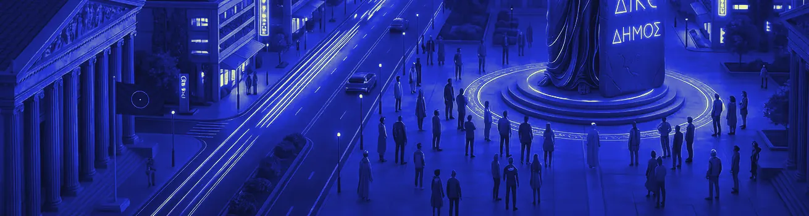

01Measurable reality
Decisions start from verified physical data. The base layer defines how reality is captured and checked.
The rule of justice
Dikenocracy is a governance framework built on measurable reality, deterministic rules and transparent protocols — designed to reduce dependence on opinion, narrative and unchecked authority.


The Dikenocracy manifesto
We don’t ask the old world for permission. We build a new world alongside it.
How it works

01Decisions start from verified physical data. The base layer defines how reality is captured and checked.
Rules are formal and testable, so accountability becomes a consequence rather than a political choice.
Every protocol is public, dated and auditable. Changes follow a defined upgrade procedure.
Power is held by the function of justice — open algorithms, public metrics and data — not by people, parties or elites.
The protocol stack
Each protocol defines a bounded part of the system and is designed to be testable and auditable. Every chip below is a protocol — open it.
↓ No higher-layer protocol may violate a lower-layer constraint.
Working projects

An assistant for small businesses in Israel: documents, bookkeeping support, taxes and cash flow — in Hebrew, Russian and English.
Open Mazkira →
Convert any date between the Gregorian, Hebrew and Dikenocratic (DTI) calendars, right in your browser.
Convert a date →
Encrypt a message locally with a code phrase you agreed in person. Nothing readable is sent to the server.
Open Shadoo →The Code of Planetary Synergy explains the system in one document; every protocol builds on it.
Read the Code →